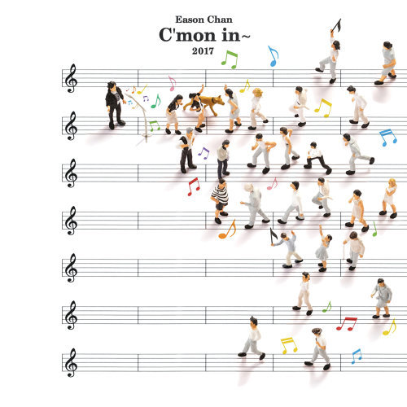

金曲獎（英語譯名：Golden Melody Awards，縮寫為GMA）是臺灣規模最大的音樂獎，也是華人地區兼具榮譽及影響力的大型音樂獎勵活動之一，與金馬獎、金鐘獎並列為臺灣三大娛樂獎，合稱為「三金」。於1990年首次舉辦，每年頒發一次。現今獎項分為「流行音樂」（簡稱流行類）與「傳統暨藝術音樂」（簡稱傳藝類）兩大類別，兩者分開舉辦頒獎典禮，流行類由文化部影視及流行音樂產業局主辦，傳藝類則由國立傳統藝術中心主辦。
| 最佳國語男歌手 | 宋念宇/同在 | 李玖哲／李玖哲"Will You Remember | 陳奕迅／C'mon In~ | 林俊傑／偉大的渺小 | 許書豪／HOW | ||
|---|---|---|---|---|---|---|---|
| 最佳國語女歌手 | 呂薔／O_LOVE | 徐佳瑩／心裡學 | Faye 飛／小太空 | aMEI／偷故事的人 | 彭佳慧／我想念我自己 | ||
| 最佳新人 | 鄭興／忽然有一天，我離開了台北 | 茄子蛋／卡通人物 | J.Sheon／街巷 | 李權哲／醒著不醉 | 閻奕格／我有我自己 | 蘇珮卿／我們都是寂寞的 | 丁世光／神經誌 |
| 最佳國語專輯 | 忽然有一天，我離開了台北／﹙演唱者：鄭興﹚ | 心裡學／﹙演唱者：徐佳瑩﹚ | C'mon In~／﹙演唱者：陳奕迅﹚ | 偷故事的人／﹙演唱者：aMEI﹚ | 偉大的渺小／﹙演唱者：林俊傑﹚ | 神經誌／﹙演唱者：丁世光﹚ | |
| 最佳年度歌曲 | 有 無 (片尾曲) To Have, or Not To Have《大佛普拉斯的電影配樂》／﹙演唱 者：林生祥﹚ | 長途夜車《進擊下半場 Begin The Second Half》／﹙演唱 者： 滅火器﹚ | 魚仔《魚仔》／添翼創越工作室﹙演唱者：盧廣仲﹚ | 致觀音山《家 III》／種子音樂有限公司﹙演唱者：羅大佑﹚ | 偉大的渺小《偉大的渺小》／﹙演唱者：林俊傑﹚ |
| 最佳國語男歌手 | 陳奕迅／C'mon In~ |
|---|---|
| 最佳國語女歌手 | 徐佳瑩／心裡學 |
| 最佳國語專輯 | 心裡學／﹙演唱者：徐佳瑩﹚ |
| 最佳年度歌曲 | 魚仔《魚仔》／添翼創越工作室﹙演唱者：盧廣仲﹚ |
陳奕迅
陳奕迅（Eason Chan Yick-shun，1974年7月27日－），香港歌手及演員，曾擔任第十屆香港演藝人協會副會長，曾獲美國《時代雜誌》形容為影響香港樂壇風格的人物[7]。他是最具代表性的粵語流行音樂男歌手和90年代新秀冠軍之一，千禧年香港最成功的男歌手之一，獲得「新一代歌神」之稱，是深受年輕樂迷歡迎的人物。[8][9][10]。2010年，陳奕迅入選全球華人音樂殿堂—中國華語金曲獎「30年經典評選」，成為1990年代出道歌手唯一代表。
點我看youtube
>
陳奕迅，香港歌手及演員，曾擔任第十屆香港演藝人協會副會長，曾獲美國《時代雜誌》形容為影響香港樂壇風格的人物。他是最具代表性的粵語流行音樂男歌手和90年代新秀冠軍之一，千禧年香港最成功的男歌手之一，獲得「新一代歌神」之稱，是深受年輕樂迷歡迎的人物。